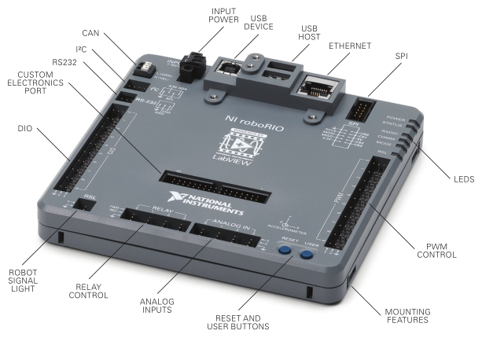

roboRIO
The roboRIO is arguably one of the most important parts of the robot; it is what one might consider the "brain" of the bot itself. This is a small computer that executes all of the robot's functions. Every piece of programmable electronics is connected to the roboRIO somehow. We will go over each element and its significance (if one is skipped, it is because we don't really use it):
Input Power
This is a clip that is screwed right into the RIO in order to provide power to the robot. On the back, there are itty bitty flat head screws that open up the inside of the holes to allow a wire to go inside. Tighten those screws to secure the wire in place. The V port is for the positive (red) wire and C is for ground (black).
USB Device
This port enables the roboRIO to be able to connect to a computer using a USB cable. This is necessary for certain steps of setup and for tethering to the driver station if an Ethernet cable cannot be used.
USB Host
These ports are only used if the RIO is hosting a USB device (i.e. a USB web camera). We have also used it to power a Raspberry Pi. Do NOT plug the joysticks into these ports; believe me, people have.
Ethernet
This is where the roboRIO is able to connect to the driver station. It can either be tethered directly to a computer or laptop, or plugged into the wireless router.
LEDs
These are just indicator LEDs that can help you diagnose certain issues. I actually don't know what some of them mean, but you can look it up pretty easily. The only one I've really used is the COMM light while on the game field to determine if the robot is connected to the driver station.
PWM Ports
I will talk more about PWM in another section, but basically this is where you will plug in your speed controllers. Make sure to pay attention to which direction they are plugged in to avoid frying any electronics! When you create a speed controller object later on, the parameter will be the channel you plug it into on the RIO (0-9).
Analog Inputs
This can be used for any sort of analog sensor you would like to add to the robot. For example, we have used ultrasonic distance sensors in the past.
DIO (Digital Input/Output)
Just like the analog inputs, this can be used for digital sensors, but can also output a signal to something like a switch.
CAN
This is the beginning of the CAN bus; it runs from the roboRIO to the CAN devices and finally to the Power Distribution Panel in a daisy chain. I will discuss CAN more in depth later.
Everything is very nicely labeled and documented somewhere on the Internet. Hopefully this is just a good starting guide so you have what you need to know in order to begin programming.